Solda « ETUDE DSI – Cadrage transverse – SOS Correspondance – IHM_V1.0.2.pptx » slaytının birebir görüntüsü, sağda çıkardığım akış. Karşılaştır : aynı mı ? Görsele tıkla → tam boyut.
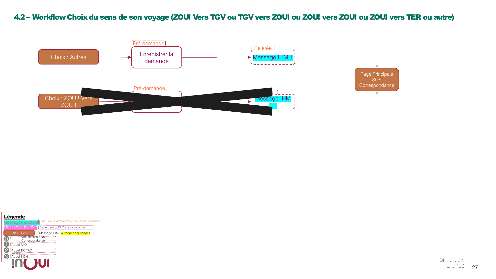
PPT diapo 27
Pré-demande Enregistrer la demande → Rejetée ⇒ IHM 1Pré-demande Enregistrer la demande → Rejetée ⇒ IHM 11 → (FIN) Page PrincipaleZOU!→TGV* → diapo 28 · TGV*→ZOU! → diapo 29.
Uygulamada : Autres → messages.html?1 · ZOU!→ZOU! → ?11 ✓
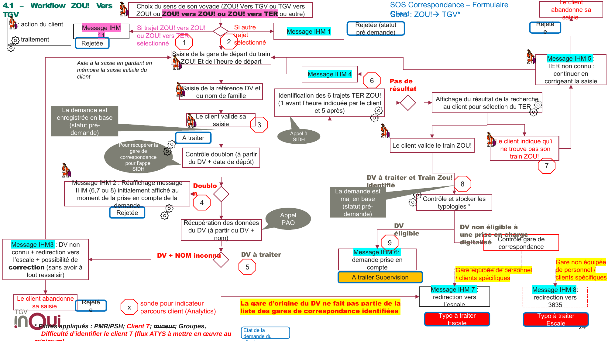
PPT diapo 24 — octogones rouges 1-9 = sondes Analytics
ZOU!→ZOU!/TER ⇒ IHM 11 · autre ⇒ IHM 1DV+NOM inconnu ⇒ IHM 3 + correction sans tout ressaisir ; « le client abandonne » → RejetéeDV éligible ⇒ IHM 6 A traiter Supervision · non éligible digitalisé → contrôle gare : équipée ⇒ IHM 7 (escale) · non équipée ⇒ IHM 8 (3635) Typo à traiter EscaleUygulamada : 1 avant + 5 après kuralı form.html'de ✓ · IHM 3/4/5 düzeltme döngüleri ✓ · typoloji kolonu/filtre ✓
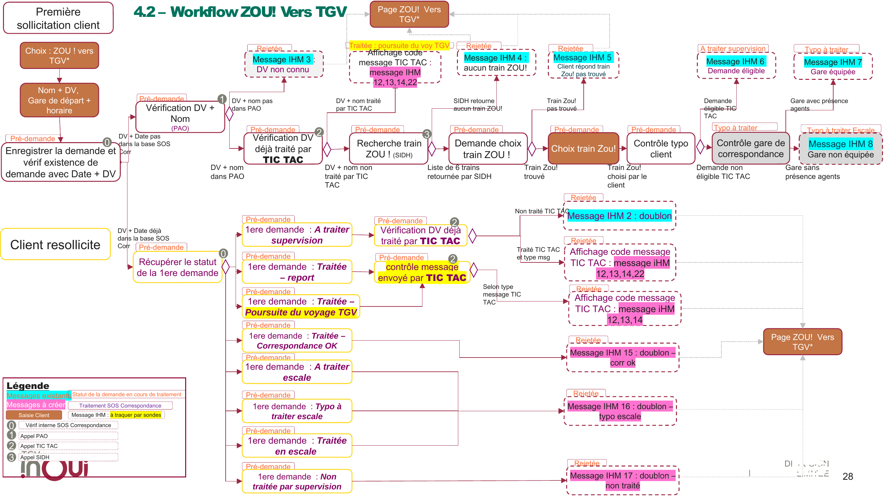
PPT diapo 28 — badges ⓪①②③ = appels système (interne / PAO / TIC TAC / SIDH)
DV+nom PAS dans PAO → Rejetée ⇒ IHM 3 · dans PAO → 2traité → Traitée : poursuite du voy TGV ⇒ IHM 12/13/14/22 · non traité → 3aucun train → Rejetée ⇒ IHM 4 · liste de 6 trains → 4pas trouvé → Rejetée ⇒ IHM 5 · trouvé/choisi → Saisie client « Choix train Zou! » → 5éligible TIC TAC → A traiter supervision ⇒ IHM 6 · non éligible → 6avec agents ⇒ IHM 7 · sans agents ⇒ IHM 8 — Typo à traiter Escale↩ Retour « Page ZOU! Vers TGV* » (pointillé) : IHM 3, 4, 5 et l'affichage TIC TAC seulement. IHM 6/7/8 : pas de flèche retour.
| Statut 1ʳᵉ demande | Suite | ⇒ Message |
|---|---|---|
| A traiter supervision | ② vérif TIC TAC : non traité / traité | IHM 2 / IHM 12/13/14/22 |
| Traitée – report | ② contrôle message envoyé par TIC TAC (selon type) | IHM 12/13/14 |
| Traitée – Poursuite du voyage TGV | ||
| Traitée – Correspondance OK | — | IHM 15 |
| Typo à traiter / A traiter / Traitée escale | — | IHM 16 |
| Non traitée par supervision | — | IHM 17 |
Tous ⇒ (FIN) Page ZOU! Vers TGV*.
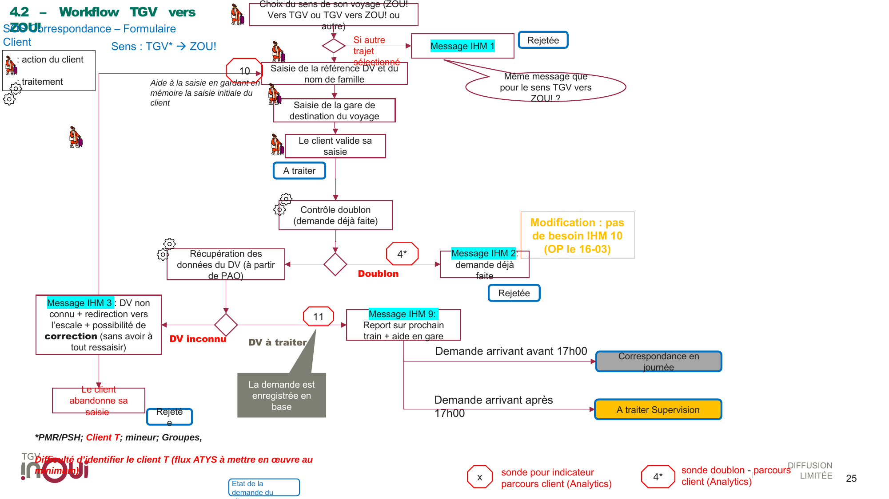
PPT diapo 25 — sondes 10, 11, 4* (doublon)
4*DV inconnu ⇒ IHM 3 (correction sans tout ressaisir) ; abandon → RejetéeDV à traiter → demande enregistrée ⇒ IHM 9 (report prochain train + aide en gare) :
📌 Encart : « Modification : pas de besoin IHM 10 (OP le 16-03) ».
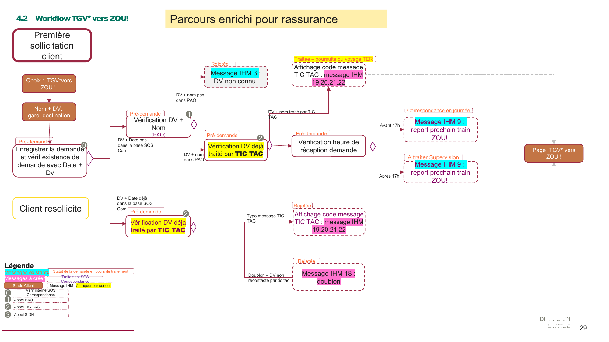
PPT diapo 29
DV+nom PAS dans PAO → Rejetée ⇒ IHM 3 · dans PAO → 2DV+nom traité par TIC TAC → Traitée – poursuite du voyage TER ⇒ IHM 19/20/21/22 · sinon → 3avant 17h → Correspondance en journée ⇒ IHM 9après 17h → A traiter Supervision ⇒ IHM 9Typo message TIC TAC → Rejetée ⇒ IHM 19/20/21/22Doublon – DV non recontacté par TIC TAC → Rejetée ⇒ IHM 18Toutes les fins ⇒ (FIN) Page TGV* vers ZOU! (pointillé).
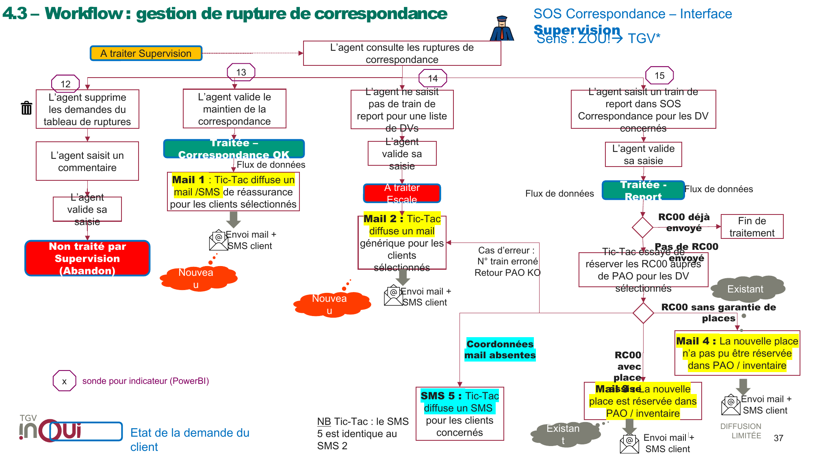
PPT diapo 37 — octogones 12-15 = sondes PowerBI
Entrée : A traiter Supervision → « l'agent consulte les ruptures », 4 actions :
| # | Action agent | Statut | TIC TAC → client |
|---|---|---|---|
| 12 | Supprime les demandes + commentaire + valide | Non traité par Supervision (Abandon) | — |
| 13 | Valide le maintien de la correspondance | Traitée – Correspondance OK | Mail/SMS 1 (réassurance) |
| 14 | Ne saisit PAS de train de report (liste de DVs) + valide | A traiter Escale | Mail 2 générique (+ SMS 5 si mail absent ; SMS 5 = SMS 2) |
| 15 | Saisit un train de report + valide | Traitée - Report | RC00 déjà envoyé → fin · sinon réservation RC00 via PAO : place assise → Mail 3 · sans garantie → Mail 4 |
Cas d'erreur : « N° train erroné / retour PAO KO » → retour Mail 2.
Uygulamada : Train de report → traitee-report→?12 · Renvoi escale → ?16 · Correspondance OK → ?15 · Non traitable → ?17 ✓
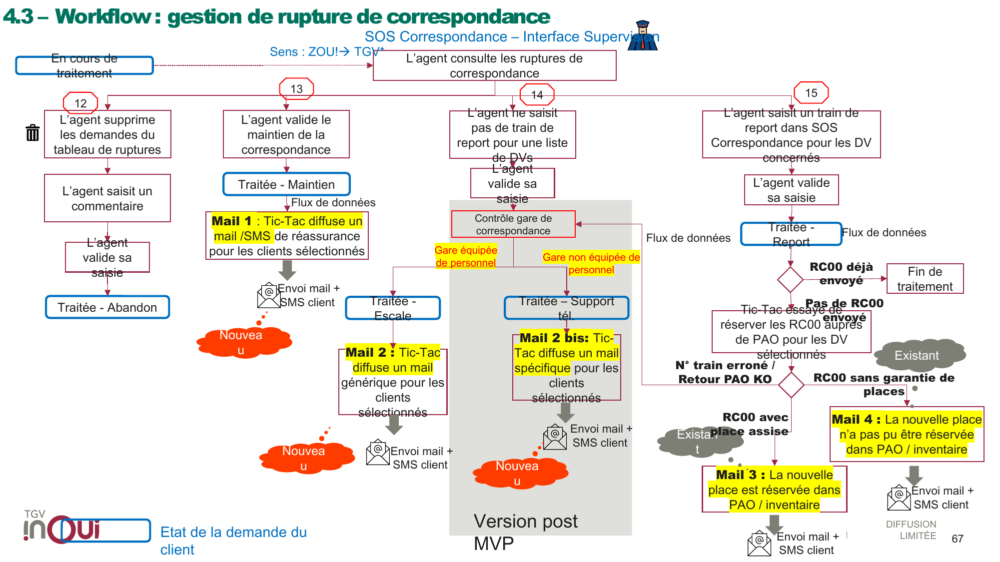
PPT diapo 67 — zone grise = « Version post MVP »
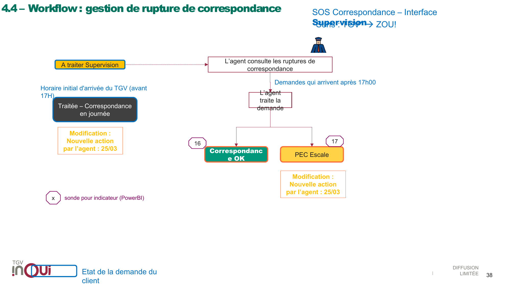
PPT diapo 38
avant 17h → Traitée – Correspondance en journée (otomatik, agent yok)Demandes arrivant après 17h00 → l'agent traite la demande :
Uygulamada : 17h sonrası talepler TGV*→ZOU! sekmesinin kuyruğuna düşer ; bar ortak 4 motif (16/17'ye özel bar yok — bilinen sapma).
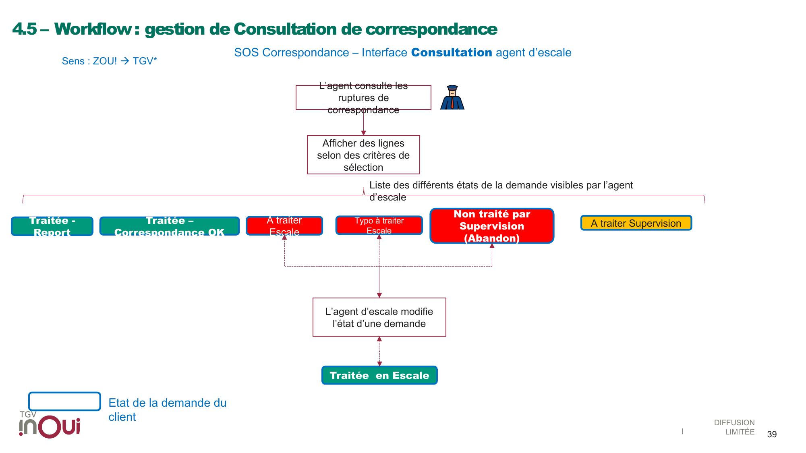
PPT diapo 39
A traiter Escale / Typo à traiter Escale / Non traité par Supervision → Traitée en Escale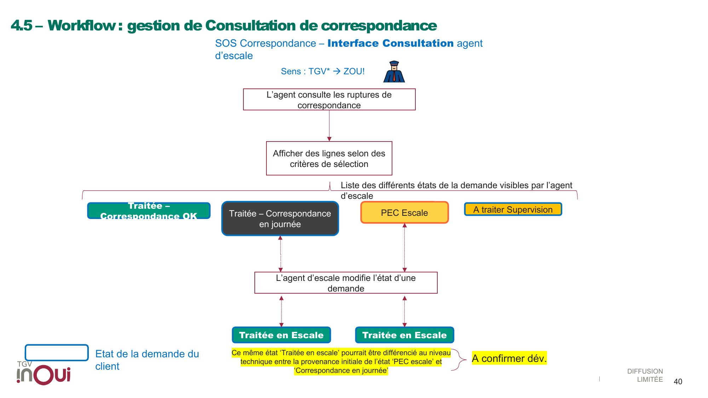
PPT diapo 40
Correspondance en journée / PEC Escale → Traitée en Escale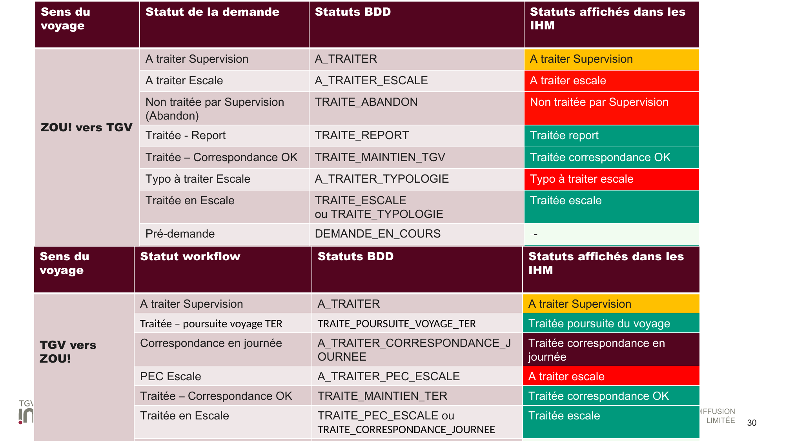
PPT diapo 30
ZOU!→TGV : A traiter Supervision=A_TRAITER · A traiter Escale=A_TRAITER_ESCALE · Non traitée=TRAITE_ABANDON · Traitée-Report=TRAITE_REPORT · Corr. OK=TRAITE_MAINTIEN_TGV · Typo escale=A_TRAITER_TYPOLOGIE · Traitée en Escale=TRAITE_ESCALE / TRAITE_TYPOLOGIE · Pré-demande=DEMANDE_EN_COURS
TGV→ZOU! : + TRAITE_POURSUITE_VOYAGE_TER, A_TRAITER_CORRESPONDANCE_JOURNEE, A_TRAITER_PEC_ESCALE, TRAITE_MAINTIEN_TER, TRAITE_PEC_ESCALE / TRAITE_CORRESPONDANCE_JOURNEE
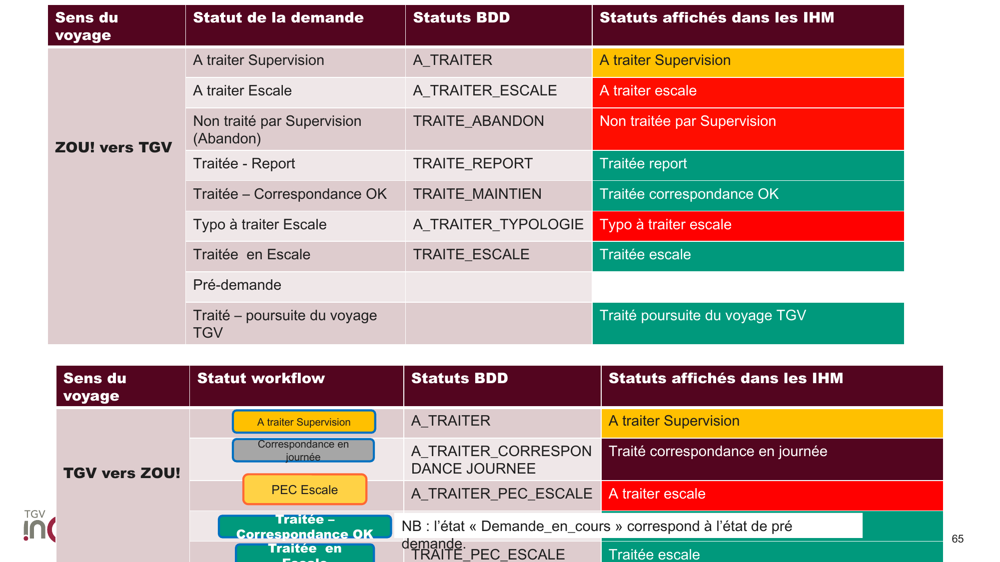
PPT diapo 65
TRAITE_MAINTIEN_TGV → TRAITE_MAINTIENTRAITE_ESCALEDEMANDE_EN_COURS = pré-demande durumuKaynak dokümantasyon : references/sos-correspondance-workflows.md · Slayt görüntüleri : assets/workflow-slides/ (pdftoppm 150 dpi)